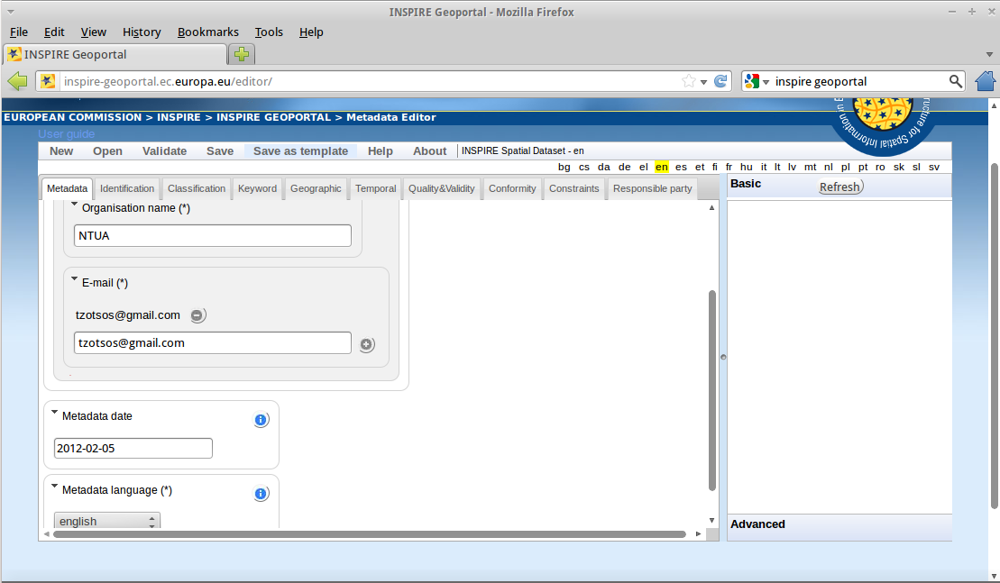
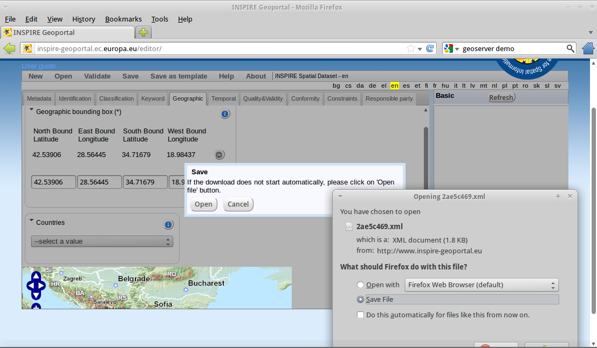

Guida rapida pycsw¶
pycsw è un’implementazione del server OGC CSW scritta in Python. pycsw permette la pubblicazione e la scoperta di metadati geospaziali. Gli archivi esistenti di metadati geospaziali possono essere esposti tramite OGC:CSW 2.0.2 o OGC:CSW 3.0.0.
Contenuti
Esegui l’applicazione del tester¶
Sul desktop vai a Web Services –> pycsw o apri Firefox e naviga verso
http://localhost/pycsw/tests/index.html:
Selezionando l’elenco a discesa a sinistra, l’utente può vedere varie richieste POST predefinite, codificate come XML, che possono essere inviate a pycsw.
Seleziona «apiso/DescribeRecord» e premi il pulsante «Send». Una descrizione del record del profilo di applicazione ISO viene presentata sul pannello di destra.

Seleziona «GetCapabilities-SOAP» e premi il pulsante «Send». Una richiesta SOAP viene inviata al server per pubblicizzare le sue capabilities di servizio web.

Puoi cercare i record di dati, eseguendo una query spaziale bounding box, selezionando «GetRecords-filter-bbox» e modificando le coordinate nella richiesta XML.

Puoi passare attraverso tutte le richieste disponibili ed eseguire varie richieste da questa applicazione di test.
Capire le capabilities e la configurazione¶
Le capabilities dell’installazione di pycsw possono essere trovate su http://localhost/pycsw?service=CSW&version=2.0.2&request=GetCapabilities. Se usi semplicemente http://localhost/pycsw otterrai il documento delle capabilities per CSW 3.0.0, poiché è l’ultima versione supportata.
Per modificare i metadati del servizio web, inclusi nel documento delle capabilities, puoi modificare il file /etc/pycsw/default.cfg sotto il tag [metadata:main].
Se vuoi abilitare il supporto di INSPIRE Discovery Service, compila i metadati sotto il tag [metadata:inspire] e imposta la proprietà enabled a true.
Per la funzionalità completa e le opzioni di configurazione, consulta la documentazione sul sito web di pycsw.
Crea metadati¶
I file di metadati per un dataset spaziale o un servizio web spaziale possono essere creati attraverso l’implementazione open source della direttiva di ispirazione per i metadati, European Open Source Metadata Editor (EUOSME). Questa applicazione può essere trovata su http://inspire-geoportal.ec.europa.eu/editor/. Il codice sorgente è disponibile su https://joinup.ec.europa.eu/svn/euosme/trunk.
Puoi riempire i campi di metadati obbligatori andando attraverso le schede dell’applicazione, aggiungendo informazioni come il nome del proprietario dei dati, le parole chiave, la posizione della risorsa sul web, la posizione geografica (usando un rettangolo di delimitazione o il nome di un paese), ecc.
{kind=link}
Dopo aver aggiunto tutte le informazioni disponibili, premi il pulsante validation in cima alla pagina per verificare la coerenza con la direttiva INSPIRE.
{kind=link}
Dopo una convalida riuscita, il file XML può essere salvato sul disco locale e visualizzato attraverso un editor di testo o un browser.
Carica metadati¶
pycsw supporta i seguenti database:
SQLite3
PostgreSQL (PostGIS opzionale)
MySQL
In OSGeoLive è stata implementata una semplice configurazione SQLite. Il database può essere trovato in /usr/share/pycsw/tests/suites/cite/data/records.db.
Crea un nuovo database¶
Per creare un nuovo database SQLite hai bisogno di:
Modifica
/etc/pycsw/default.cfg:[repository]
database: il percorso completo del file del database dei metadati, nel formato URL del database (vedi https://docs.sqlalchemy.org/en/latest/core/engines.html#database-urls)
table: il nome della tabella per i record di metadati (quello predefinito è
records)
Imposta il database:
$ sudo pycsw-admin -c setup_db -f /etc/pycsw/default.cfg
Questo creerà le tabelle e i valori necessari per il repository.
Il database creato è un database compatibile con l’FSF e può essere usato con qualsiasi software di implementazione. Per esempio, da usare con OGR:
$ ogrinfo /path/to/records.db
INFO: Open of 'records.db'
using driver 'SQLite' successful.
1: records (Polygon)
$ ogrinfo -al /path/to/records.db
# lots of output
Importa metadati¶
$ sudo pycsw-admin -c load_records -f /etc/pycsw/default.cfg -p /path/to/records -r
Questo importerà tutti i record *.xml da /path/to/records nel nuovo database e configurerà il repository per esporre queryable come da tabella 53 di OGC:CSW.
Scoperta dei dati attraverso il plugin QGIS MetaSearch¶
Sul desktop vai a Desktop GIS –> QGIS per avviare QGIS, poi clicca sul pulsante MetaSearch (icona CSW)

Aggiungi il server pycsw premendo il pulsante New e scrivi
http://localhost/pycsw/.
{kind=link}
Aggiungi alcuni server predefiniti usando il pulsante Add default servers ed ottieni anche le capabilities del server usando il pulsante Server info.
{kind=link}
Esegui una ricerca utilizzando il catalogo, sia per un valore di stringa che con un riquadro di delimitazione
{kind=link}
Cose da provare¶
Prova a scoprire i dati attraverso l’applicazione Tester impostando le richieste appropriate, ad esempio qualsiasi ricerca di testo con la stringa «imagery» porta a scoprire i dati xml creati in precedenza da EUOSME

Prova a scoprire i dati attraverso l’interfaccia Python OWSLib CSW.
Prova a scoprire i dati da GeoNode, che è anche incluso in OSGeoLive e usa pycsw come motore CSW predefinito.
E ora?¶
Per maggiori informazioni su pycsw, consulta la documentazione sul sito web di pycsw.